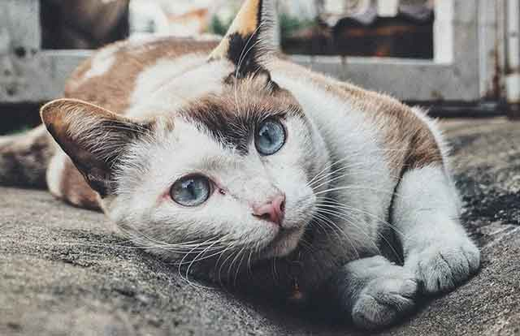

고양이에게 위험한 질병 원인
사람은 아프면 "아프다"라고 말할 수 있지만, 애완동물은 그럴수 없습니다. 왜냐하면 아프다는 것을 직접 표현할수 없기 때문이죠. 같이 생활하다 보면 평소와 다른 모습이 보이면서 어딘가 아픈 것은 아닌지 걱정 하게 되지만, 평소에도 얌전한 모습을 보이는 애완동물이라면 이마저도 알기 힘들어 질 것입니다. 특히, 고양이는 아파도 아픈 티를 내지 않는 동물로 알려졌죠! 집사님의 애타는 마음이 여기까지 들리는 듯한데요. 고양이에게 위험한 질병 원인 함께 알아볼게요.
[고양이 범백혈구감소증]
고양이 '범백혈구감소증'. 다소 어려워 보이는 말이지만, 이 질병은 파보 바이러스에 의한 질병으로 바이러스성 장염을 의미합니다. 사람은 장염에 걸리면, 일주일 정도 고생 후 이내 건강을 되찾지만 고양이는 백혈구가 급격히 감소하는 증상이 나타나 생명에 위협이 될 수 있습니다.
게다가 이 질병은 전염성이 높은 질병으로 걸리면 거의 다 사망한다고 할 정도로 사망률이 높은 질병입니다. 범백은 체액, 변, 벼룩 등의 다양한 경로로 전염할 수 있으며 오염된 주변 환경을 통해 전염됩니다.
[고양이 광견병]
광견병은 '뇌척수에 영향을 주는 질병이라고 생각하시면 되는데요. 백신 접종이 되지 않은 길고양이에게 감염될 가능성이 큽니다. 대게 감염이 생길 정도의 상처나 구강, 점막 등에 감염되기 쉽습니다.
문제는 광견병 증상이 곧바로 나타나지 않는다는 것이며, 10일부터 최대 1년까지의 잠복기 이후 임상 증상이 나타나면 대게 10일 이내 사망하는 질병입니다.
[고양이 신부전증]
'신부전증' 이라는 것은 신장 질환으로 늙은 고양이가 사망하는 대표적인 원인 중 하나입니다. 신장 질환은 환경, 유전, 나이 등의 다양한 이유로 발병합니다.
사람도 신장이 다치면 몸에 쌓이는 독소 해소가 어려워지고, 전해질 균형을 맞추기가 힘듭니다. 고양이 역시 체내 독소를 제대로 걸러내지 못해 사망에 이를 수 있으므로 될 수 있으면 이른 시일 내에 치료하는 것이 좋습니다.
[고양이 백혈병]
고양이 백혈병은 전염되기 아주 쉬운 질병 중 하나입니다. 고양이가 생활하는 생활 반경 내에서 할 수 있는 모든 행동을 통해 감염되는데요. 콧물, 침, 오줌 등으로 전염됩니다.
수직감염도 가능하며 증상은 신체 모든 장기를 통해 다양한 형태로 나타날 수 있습니다. 대게 청결과 관련된 요인으로 감염 및 전염될 수 있으므로 평소 고양이 생활 환경 관리가 중요합니다.
고양이가 걸리면 위험한 질병에 대해서 알아봤습니다. 대게 질병의 감염 경로는 고양이가 생활하는 '환경'과 관련된 사항이 많습니다. 즉, 청결하지 못해 발병하는 사례가 많으므로 될 수 있으면 평소 고양이 주변을 깨끗하게 청소해 주시고, 정기적인 검사 및 예방접종을 필수로 해주시길 바랍니다!
[출처] 고양이에게 위험한 질병 원인 ｜ 작성자 펫패밀리